1과목: 재료역학
1. 그림과 같이 균일분포 하중 w를 받는 보에서 굽힘 모멘트 선도는?
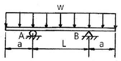
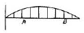
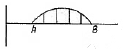
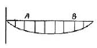
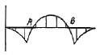
2. 일단 고정 타단 롤러 지지된 부정정보의 중앙에 집중하중 P를 받고 있을 때, 롤러 지지점의 반력은 얼마인가?
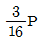
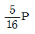
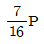
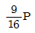
3. 지름이 d인 짧은 환봉의 축 중심으로부터 a만큼 떨어진 지점에 편심압축하중이 P가 작용할 때 단면상에서 인장응력이 일어나지 않는 a 범위는?
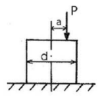
4. 바깥지름 30cm, 안지름 10cm인 중공 원형 단면의 단면계수는 약 몇 cm3인가?
5. 그림과 같이 하중을 받는 보에서 전단력의 최대값은 약 몇 kN인가?
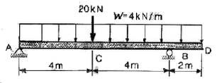
6. 그림과 같은 일단 고정 타단 롤러로 지지된 등분포하중을 받는 부정정보의 B단에서 반력은 얼마인가?
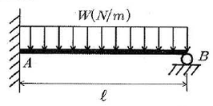
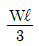
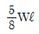
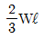
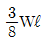
7. 그림과 같이 단붙이 원형축(Stepped Circular Shaft)의 풀리에 토크가 작용하여 평형상태에 있다. 이 축에 발생하는 최대 전단응력은 몇 MPa인가?
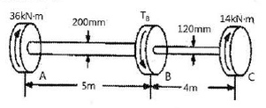
8. 그림과 구조물이 수직하중 2P를 받을 때 구조물 속에 저장되는 탄성변형에너지는? (단, 단면적 A, 탄성계수 E는 모두 같다.)
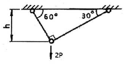
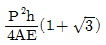
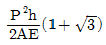
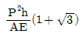
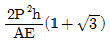
9. 지름이 동일한 봉에 위 그림과 같이 하중이 작용할 때 단면에 발생하는 축 하중 선도는 아래 그림과 같다. 단면 C에 작용하는 하중(F)는 얼마인가?
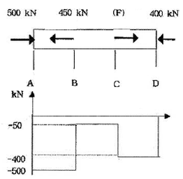
10. 강재의 인장시험 후 얻어진 응력-변형률 선도로부터 구할 수 없는 것은?
11. 두께 1.0mm의 강판에 한 변의 길이가 25mm인 정사각형 구멍을 펀칭하려고 한다. 이 강판의 전단 파괴응력이 250MPa 일 때 필요한 압축력은 몇 kN 인가?
12. 정육면체 형상의 짧은 기둥에 그림과 같이 측면에 홈이 파여져 있다. 도심에 작용하는 하중 P로 인하여 단면 m-n 에 발생하는 최대 압축응력은 홈이 없을 때 압축응력의 몇 배 인가?
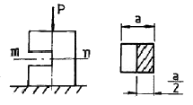
13. 길이가 L이고 지름이 d0인 원통형의 나사를 끼워 넣을 때 나사의 단위 길이 t0의 토크가 필요하다. 나사 재질의 전단탄성계수가 G일 때 나사 끝단 비틀림 회전량(rad)은 얼마인가?(오류 신고가 접수된 문제입니다. 반드시 정답과 해설을 확인하시기 바랍니다.)
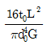
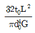
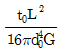
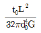
14. 그림과 같이 순수 전단을 받는 요소에서 발생하는 전단응력 τ=70MPa, 재료의 세로탄성계수는 200GPa, 포아송의 비는 0.25일 때 전단 변형률은 약 몇 rad 인가?
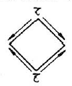
15. 그림과 같은 단순 지지보의 중앙에 집중하중 P가 작용할 때 단면이 (가)일 경우의 처짐 y1은 단면이 (나)일 경우의 처임 y2의 몇 배인가? (단, 보의 전체 길이 및 보의 굽힘 강성은 일정하며 자중은 무시한다.)
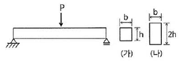
16. 지름 35cm의 차축이 0.2°만큼 비틀렸다. 이때 최대 전단응력이 49MPa이고, 재료의 전단탄성계수가 80GPa이라고 하면 이 차축의 길이는 약 몇 m 인가?
17. 그림과 같이 벽돌을 쌓아 올릴 때 최하단 벽돌의 안전계수를 20으로 하면 벽돌의 높이 h를 얼마만큼 높이 쌓을 수 있는가? (단, 벽돌의 비중량은 16kN/m3, 파괴 압축응력을 11MPa로 한다.)
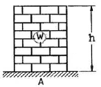
18. 평면 응력상태에서 σx와 σy 만이 작용하는 2축 응력에서 모어원의 반지름이 되는 것은? (단, σx>σy 이다.)
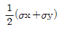
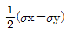
19. 전단력 10kN이 작용하는 지름 10cm인 원형단면의 보에서 그 중립축 위에 발생하는 최대 전단응력은 약 몇 MPa인가?
20. 지름 100mm의 양단 지지보의 중앙에 2kN의 집중하중이 작용할 때 보 속의 최대굽힘응력이 16MPa 일 경우 보의 길이는 약 몇 m 인가?
2과목: 기계열역학
21. 질량 1kg의 공기가 밀폐계에서 압력과 체적이 100kPd, 1m3 이었는데 폴리트로픽 과정(PVn=일정)을 거쳐 체적이 0.5m3이 되었다. 최종 온도 (T2)와 내부 에너지의 변화량(△U)은 각각 얼마인가? (단, 공기의 기체상수는 287 J/kgㆍK, 정적비열은 718 J/kgㆍK, 정압비열은 10⑤ J/kgㆍK, 폴리트로프 지수는 1.3이다.)
22. 카르노 열기관 사이클 A는 0℃와 100℃ 사이에서 작동되며 카르노 열기관 사이클 B는 100℃와 200℃ 사이에서 작동된다. 사이클 A의 효율(ηA)과 사이클 B의 효율(ηB)을 각각 구하면?
23. 대기압 100kPa에서 용기에 가득 채운 프로판을 일정한 온도에서 진공펌프를 사용하여 2kPa 까지 배기하였다. 용기 내에 남은 프로판의 중량은 처음 중량의 몇 % 정도 되는가?
24. 이상기체에서 엔탈피 h 와 내부에너지 u, 엔트로피 s 사이에 성립하는 식으로 옳은 것은? (단, T는 온도, v는 체적, P는 압력이다.)
25. 온도 T2인 저온체에서 열량 QA를 흡수해서 온도가 T1인 고온체로 열량 QR를 방출할 떄 냉동기의 성능계수(coefficient of performance)는?
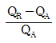
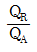
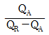
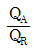
26. 비열비가 k인 이상기체로 이루어진 시스템이 정압과정으로 부피가 2배로 팽창할 때 시스템에 한 일이 W, 시스템에 전달된 열이 Q일 때, W/Q는 얼마인가? (단, 비열은 일정하다.)
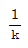
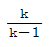
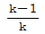
27. 냉동기 냉매의 일반적인 구비조건으로서 적합하지 않은 사항은?
28. 공기 1kg을 정적과정으로 40℃에서 120℃까지 가열하고, 다음에 정압과정으로 120℃에서 220℃까지 가열한다면 전체 가열에 필요한 열량은 약 얼마인가? (단, 정압비열은 1.00kJ/kgㆍK, 정적비열은 0.71kJ/kgㆍK 이다.)
29. 열역학적 상태량은 일반적으로 강도성 상태량과 용량성 상태량으로 분류할 수 있다. 강도성 상태량에 속하지 않는 것은?
30. 그림과 같이 중간에 격벽이 설치된 계에서 A에는 이상기체가 충만되어 있고, B는 진공이며, A와 B의 체적은 같다. A와 B사이의 격벽을 제거하면 A의 기체는 단열비가역 자유팽창을 하여 어느 시간 후에 평형에 도달하였다. 이 경우의 엔트로피 변화 △s는? (단, Cv는 정적비열, Cp는 정압비열, R은 기체상수이다.)
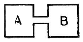
31. 수소(H2)를 이상기체로 생각하였을 때, 절대압력 1MPa, 온도 100℃에서의 비체적은 약 몇 m3/kg인가? (단, 일반기체상수는 8.3145 kJ/lmolㆍK 이다.)
32. 그림과 같은 Rankine 사이클의 열효율은 약 몇 % 인가? (단, h1=191.8 kJ/kg, h2=193.8 kJ/kg, h3=2799.5 kJ/kg, h4=2007.5 kJ/kg 이다.)
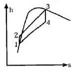
33. 20℃의 공기 5kg이 정압 과정을 거쳐 체적이 2배가 되었다. 공급한 열량은 몇 약 kJ인가? (단, 정압비열은 1kJ/kgㆍK 이다.)
34. 밀도 1000kg/m3인 물이 단면적 0.01m2인 관속을 2m/s의 속도로 흐를 때, 질량유량은?
35. 온도가 150℃인 공기 3kg이 정압 냉각되어 엔트로피가 1.063kJ/K 만큼 감소되었다. 이때 방출된 열량은 약 몇 kJ 인가? (단, 공기의 정압비열은 1.01kJ/kgㆍK 이다.)
36. 밀폐계의 가역 정적변화에서 다음 중 옳은 것은? (단, U:내부에너지, Q:전달된 열, H:엔탈피, V:체적, W:일 이다.)
37. 과열증기를 냉각시켰더니 포화영역 안으로 들어와서 비체적이 0.2327m3/kg이 되었다. 이때의 포화액과 포화증기의 비체적이 각각 1.079×10-3 m3/kg, 0.5243m3/kg 이라면 건도는?
38. 오토 사이클의 압축비가 6인 경우 이론 열효율은 약 몇 % 인가? (단, 비열비 =1.4 이다.)
39. 30℃, 100kPa의 물을 800kPa까지 압축한다. 물의 비체적이 0.001m3/kg로 일정하다고 할 때, 단위 질량당 소요된 일(공업일)은?
40. 냉동실에서의 흡수 열량이 5 냉동통(RT)인 냉동기의 성능계수(COP)가 2, 냉동기를 구동하는 가솔린 엔진의 열효율이 20%, 가솔린의 발열량이 43000 kJ/kg 일 경우, 냉동기 구동에 소요되는 가솔린의 소비율은 약 몇 kg/h 인가? (단, 1 냉동통(RT)은 약 3.86 kW 이다.)
3과목: 기계유체역학
41. 무차원수인 스트라홀 수(Strouhal number)와 가장 관계가 먼 항복은?
42. 수면의 높이 차이가 H인 두 저수지 사이에 지름 d, 길이 ℓ인 관로가 연결되어 있을 때 관로에서의 평균 유속(V)을 나타내는 식은? (단, f는 관마찰계수이고, g는 중력가속도이며, K1, K2는 관입구와 출구에서 부차적 손실계수이다.)
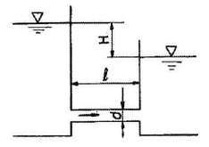
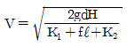
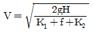
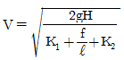
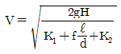
43. 다음 <보기> 중 무차원수를 모두 고른 것은?
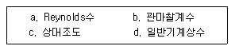
44. 정지된 액체 속에 잠겨있는 평면이 받는 압력에 의해 발생하는 합력에 대한 설명으로 옳은 것은?
45. 평판으로부터의 거리를 y라고 할 때 평판에 평행한 방향의 속도 분포 (u(y))가 아래와 같은 식으로 주어지는 유동장이 있다. 여기에서 U와 L은 각각 유동장의 특성속도와 특성길이를 나타낸다. 유동장에서는 속도 u(y)만 있고, 유체는 점성계수가 μ인 뉴턴 유체일 때 y=L/8에서의 전단응력은?
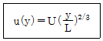
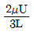
46. 다음 중 단위계(System of Unit)가 다른 것은?
47. 지름비가 1:2:3 인 모세관의 상승높이 비는 얼마인가? (단, 다른 조건은 모두 동일하다고 가정한다.)
48. 다음 중 유량을 측정하기 위한 장치가 아닌 것은?
49. 국소 대기압이 710mmHg일 때, 절대압력 50kPa은 게이지 압력으로 약 얼마인가?
50. 지음은 200mm에서 지름 100mm로 단면적이 변하는 원형관 내의 유체 흐름이 있다. 단면적 변화에 따라 유체 밀도가 변경 전 밀도의 106%로 커졌다면, 단면적이 변한 후의 유체속도는 약 몇 m/s 인가? (단, 지름 200mm에서 유체의 밀도는 800kg/m3, 평균 속도는 20 m/s 이다.)
51. 지름이 0.01m 인 관 내로 점성계수 0.0⑤ Nㆍs/m2, 밀도 800kg/m3인 유체가 1m/s의 속도로 흐를 때 이 유동의 특성은?
52. 스프링 상수가 10N/cm 인 4개의 스프링으로 평판 A를 벽 B에 그림과 같이 장착하였다. 유량 0.01m3/s, 속도 10m/s인 물 제트가 평판 A의 중앙에 직각으로 충돌할 때, 평판과 벽 사이에서 줄어드는 거리는 약 몇 cm 인가?
53. 2차원 속도장이 로 주어질 때 (1,2) 위치에서의 가속도의 크기는 약 얼마인가?
54. 낙차가 100m이고 유량이 500m3/s 인 수력발전고에서 얻을 수 있는 최대 발전용량은?
55. 노즐을 통하여 풍량 Q=0.8m3/s 일 때 마노미터 수두 높이차 h는 약 몇 m 인가? (단, 공기의 밀도는 1.2kg/m3, 물의 밀도는 1000kg/m3이며, 노즐 유량계의 송출계수는 1로 가정한다.)
56. Blasius의 해석결과에 따라 평판 주위의 유동에 있어서 경계층 두께에 관한 설명으로 틀린 것은?
57. 포텐셜 함수가 Kθ인 선와류 유동이 있다. 중심에서 반지름 1m인 원주를 따라 계산한 순환(circulation)은? (단, 이다.)
58. 수면에 떠 있는 배의 저항문제에 있어서 모형과 원형 사이에 역학적 상사(相似)를 이루려면 다음 중 어느 것이 중요한 요소가 되는가?
59. 지름 D인 파이프 내에 점성 μ인 유체가 층류로 흐르고 있다. 파이프 길이가 L일 때, 유량과 압력 손실 △p의 관계로 옳은 것은?
60. 조종사가 2000m의 상공을 일정속도로 낙하산으로 강하하고 있다. 조종사의 무게가 1000N, 낙하산 지름이 7m, 항력계수가 1.3 일 때 낙하 속도는 약 몇 m/s 이다. (단, 공기 밀도는 1kg/m3 이다.)
4과목: 기계재료 및 유압기기
61. 대표적인 주조경질 합금으로 코발트를 주성분으로 한 Co-Cr-W-Cr계 합금은?
62. 두랄루민의 합금 조성으로 옳은 것은?
63. 강의 열처리 방법 중 표면경화법에 해당하는 것은?
64. 고속도공구강(SKH2)의 표준조성에 해당되지 않는 것은?
65. 다음 중 비중이 가장 큰 금속은?
66. 서브제로(sub-Zero)처리 관한 설명으로 틀린 것은?
67. 고 망간강에 관한 설명으로 틀린 것은?
68. 강의 5대 원소만을 나열한 것은?
69. C와 Si의 함량에 따른 주철의 조직을 나타낸 조직 분포도는?
70. 과공석강의 탄소함유량(%)으로 옳은 것은?
71. 그림과 같이 P3의 압력은 실린더에 작용하는 부하의 크기 혹은 방향에 따라 달라질 수 있다. 그러나 중앙의 “A"에 특정 밸브를 연결하면 P3의 압력 변화에 대하여 밸브 내부에서 P2의 압력을 변화시켜 ⊿P를 항상 일정하게 유지시킬 수 있는데 "A"에 들어갈 수 있는 밸브는 무엇인가?
72. 유량제어 밸브를 실린더 출구 측에 설치한 회로로서 실린더에서 유출되는 유량을 제어하여 피스톤 속도를 제어하는 회로는?
73. 그림과 같은 방향 제어 밸브의 명칭으로 옳은 것은?
74. 다음 유압 작동유 중 난연성 작동유에 해당하지 않는 것은?
75. 유입관호의 유량이 25L/min 일 때 내경이 10.9mm라면 관내 유속은 약 몇 m/s인가?
76. 일반적으로 저점도유를 사용하며 유압시스템의 온도도 60~80℃ 정도로 높은 상태에서 운전하여 유압시스템 구성기기의 이물질을 제거하는 작업은?
77. 실린더 안을 왕복 운동하면서, 유체의 압력과 힘의 주고 받음을 하기 위한 지름에 비하여 길이가 긴 기계 부품은?
78. 한 쪽 방향으로 흐름은 자유로우나 역방향의 흐름을 허용하지 않는 밸브는?
79. 유압회로에서 감속회로를 구성할 때 사용되는 밸브로 가장 적합한 것은?
80. 그림과 같은 유압 회로도에서 릴리프 밸브는?
5과목: 기계제작법 및 기계동력학
81. x 방향에 대한 운동 방정식이 다음과 같이 나타날 때 이 진동계에서의 감쇠 고유진동수(damped natural frequency)는 약 몇 rad/s 인가?
82. 감쇠비 ζ가 일정할 때 전달률을 1보다 작게 하려면 진동수비는 얼마의 크기를 가지고 있어야 하는가?
83. 그림과 같이 길이가 서로 같고 평행인 두 개의 부재에 매달려 운동하는 평판의 운동의 형태는?
84. 질량 10kg인 상자가 정지한 상태에서 경사면을 따라 A지점에서 B지점까지 미끄러져 내려왔다. 이 상자의 B지점에서의 속도는 약 몇 m/s 인가? (단, 상자와 경사면 사이의 동마찰계수(μk)는 0.3이다.)
85. 질량이 100kg이고 반지름이 1m인 구의 중심에 420N의 힘이 그림과 같이 작용하여 수평면 위에서 미끄러짐 없이 구르고 있다. 바퀴의 각가속도는 몇 rad/s2 인가?(오류 신고가 접수된 문제입니다. 반드시 정답과 해설을 확인하시기 바랍니다.)
86. 주기운동의 변위 x(t)가 x(t)=Asin⍵t로 주어졌을 때 가속도의 최대값은 얼마인가?
87. 36km/h의 속력으로 달리던 자동차 A가 정지하고 있던 자동차 B 와 충돌하였다. 충돌 후 자동차 B는 2m 만큼 미끄러진 후 정지하였다. 두 자동차 사이의 반발계수 e는 약 얼마인가? (단, 자동차 A, B 의 질량은 동일하며 타이어와 노면의 동마찰계수는 0.8 이다.)
88. 기중기 줄에 200N과 160N의 일정한 힘이 작용하고 있다. 처음에 물체의 속도는 밑으로 2m/s였는데, 5초 후에 물체 속도의 크기는 약 몇 m/s 인가?
89. 스프링으로 지지되어 있는 질량의 정적 처짐이 0.5cm 일 때 이 진동계의 고유진동수는 몇 Hz인가?
90. 어떤 사람이 정지 상태에서 출발하여 직선 방향으로 등가속도 운동을 하여 5초 만에 10m/s의 속도가 되었다. 출발하여 5초 동안 이동한 거리는 몇 m 인가?
91. 다음 중 열처리(담금질)에서의 냉각능력이 가장 우수한 냉각제는?
92. 경화된 작은 철구(鐵球)를 피가공물에 고압으로 분사하여 표면의 경도를 증가시켜 기계적 성질, 특히 피로강도를 향상시키는 가공법은?
93. 허용동력이 3.6kW인 선반의 출력을 최대한으로 이용하기 위하여 취할 수 있는 허용최대 절삭면적은 몇 mm2인가? (단, 경제적 절삭속도는 120m/min을 사용하며, 피삭재의 비절삭 저항이 45kgf/mm2, 선반의 기계 효율이 0.80 이다.)
94. 용제와 와이어가 분리되어 공급되고 아크가 용제 속에서 발생되므로 불가시 아크 용접이라고 불리는 용접법은?
95. 주조에서 주물의 중심부까지의 응고시간(t), 주물의 체적(V), 표면적(S)과의 관계로 옳은 것은? (단, K는 주형상수이다.)
96. CNC 공작기계의 이동량을 전기적인 신호로 표시하는 회전 피드백 장치는?
97. 소성가공에 포함되지 않는 가공법은?
98. 절삭가공 시 절삭유(cutting fluid)의 역할로 틀린 것은?
99. 판 두께 5mm인 연강 판에 직경 10mm의 구멍을 프레스로 블랭킹하려고 할 때, 총 소요동력 (Pt)은 약 몇 kW인가? (단, 프레스의 평균속도는 7m/min, 재료의 전단강도는 300N/mm2, 기계의 효율은 80% 이다.)
100. 래핑 다듬질에 대한 특징 중 틀린 것은?